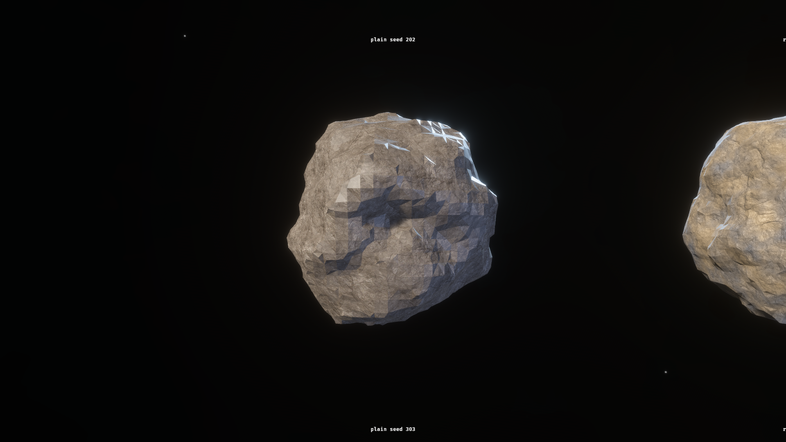
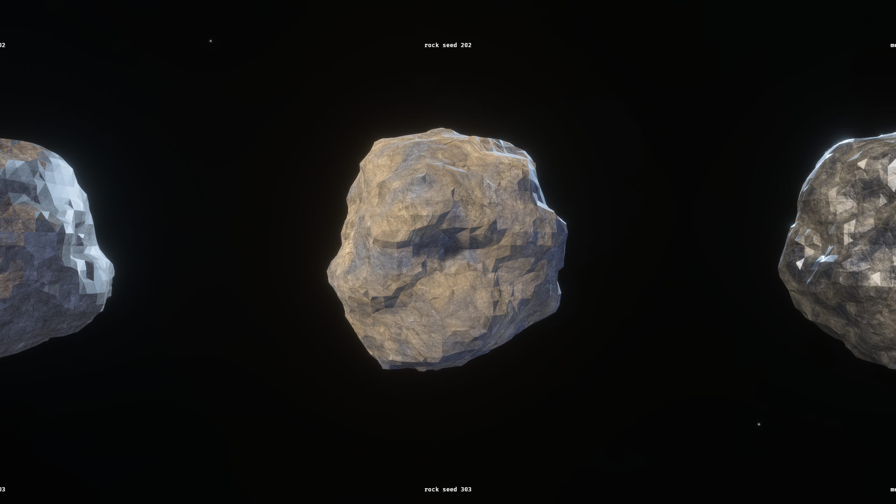
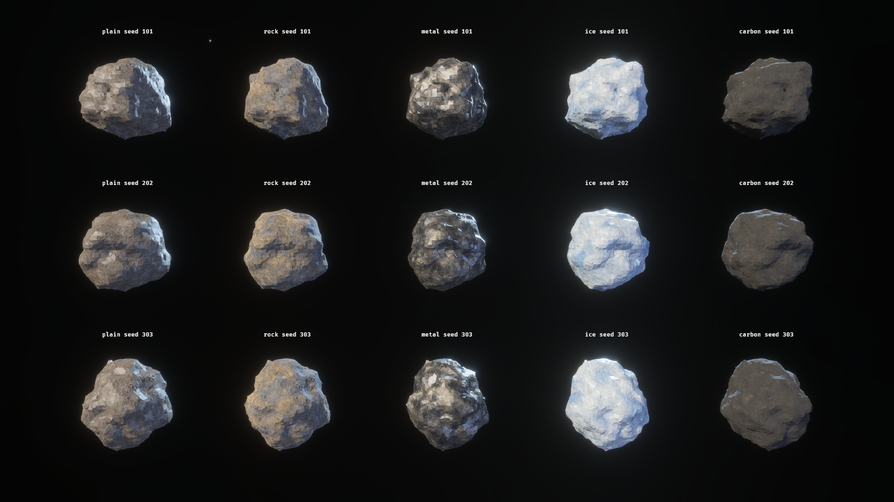
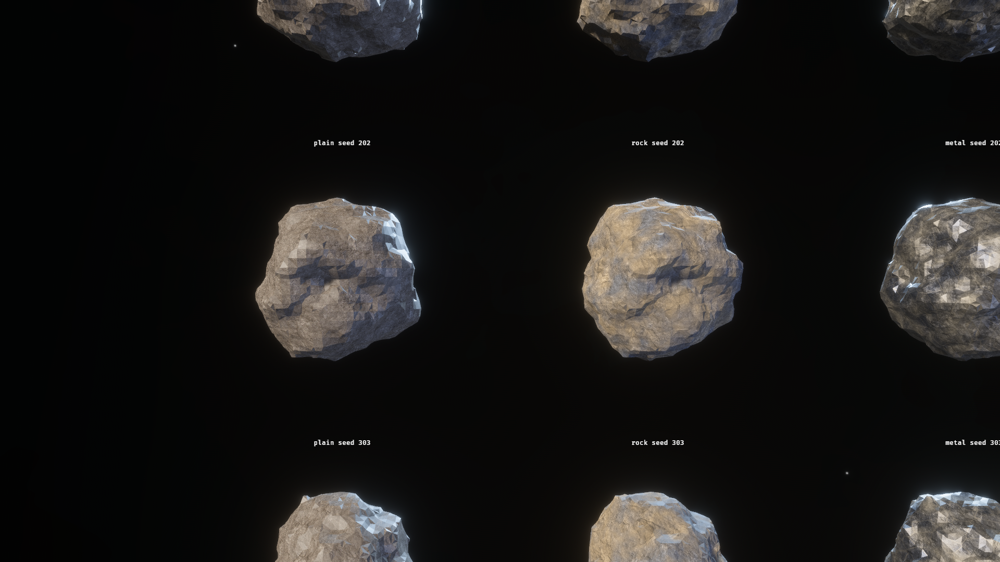
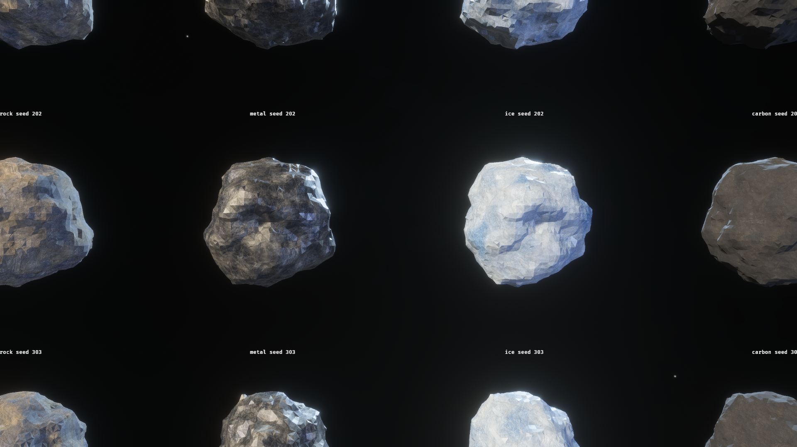
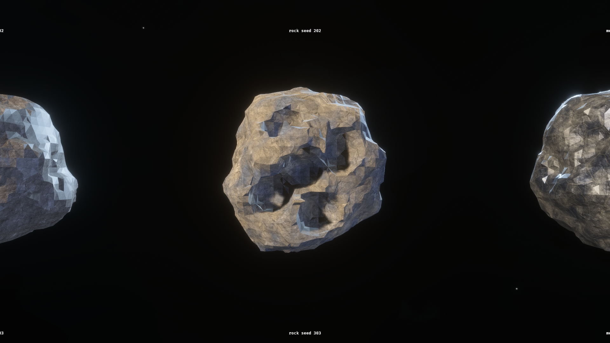

task 20260815-231945 · asteroid lane · baseline f05298fe
The rocks looked repetitive because one square texture tiled five to
eight times across every body, in the same place on every body. They looked
flat because every rock wore StandardMaterial::default() -
white, roughness 0.5 everywhere - over a texture whose linear albedo only
occupies 0.04 to 0.17. Different faults, different fixes.
Same distance, same key light, adjacent bodies in one scene. The
plain kind on the left is not a fifth rock: it is the control, with
every kind knob turned off, so it renders exactly as the surface did before this
change. It stands in the after picture's own lighting so the comparison cannot
cheat.



| id | reads as | roughness | metallic | veins |
|---|---|---|---|---|
| rock | warm tan stone banded with cool slate | 0.70 - 0.96 | 0.00 | faint |
| metal | cold grey-blue with bright cut lines | 0.28 - 0.70 | 0.85 | strong |
| ice | pale blue-white, glossy, bright fracture network | 0.08 - 0.55 | 0.00 | strongest |
| carbon | near-black, faintly warm, matte | 0.88 - 1.00 | 0.00 | faint |
| plain | the control - every knob off | 0.50 flat | 0.00 | none |


The material is sampled by position in the body's own space and never by a UV, so a remesh must not change what the rock is made of. This is the same body as the after picture above, from the same camera, after five craters cut through the real damage path.

| 1 | The existing AsteroidConfig::material id IS the kind. None resolves to KIND_ROCK, which is MATERIAL_ROCK, so nothing shipped changes id. |
| 2 | The spawned rock carries AsteroidKind(String) beside the SurfaceMaterial the audio observers already read. |
| 3 | asteroid_kind_look(&str) maps the id to fifteen scalars and three colours. An unknown id falls back to rock. |
| 4 | Look plus the body's own seed becomes one uniform. The seed drives only the projection frame, so a kind stays a kind. |
| 5 | Ore hangs off the id, not the look. A yield table is kind -> yield and the renderer never learns about it. |
| before | after | |
|---|---|---|
| textureSampleGrad per fragment | 3 | 6 |
| hash_cell per fragment | 0 | 56, or 83 with veins |
| uniform bytes | 16 | 112 |
| branches | 0 | 1, uniform across the draw |
No timing was measured and none is claimed. This lane shared a GPU with a second lane, so any millisecond figure would be a fact about contention. The table above is countable from the source. Whether it matters on a field of two hundred rocks is open, and it needs a quiet box to answer.
Reasoning, sources and licences, and the honest list of what was not verified:
see tasks/20260815-231945/ASTEROID-LOOK.md. Captures shot through
examples/playable/asteroid_kinds.rs at 1920x1080 under
NOVA_AUTOPILOT=1 NOVA_CAPTURE=1.